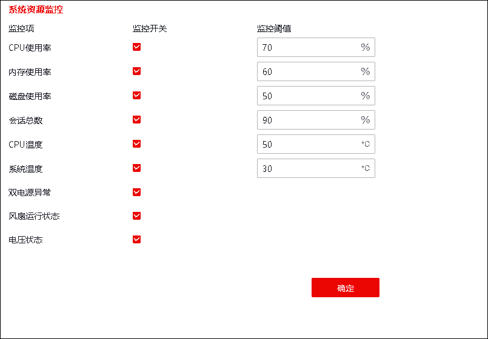

“资源监控”功能指NGFW通过联动告警模块自动监控设备的资源（CPU/内存/磁盘占用率、会话总数、CPU温度、系统温度、双电源异常、风扇运行状态电压状态）进行周期性的监视，当这些资源的状态达到某阈值，触发告警及时通知用户。相关配置包括：1）启用资源监控开关，详见本节介绍；2）配置“系统”安全事件类型的告警规则，详见 告警。
启用资源监控开关的配置步骤如下：
| 步骤1 | 选择 系统管理 > > 系统，如下图所示。 |

在配置资源监控时，各项参数的具体说明如下表所示。
参数 |
说明 |
|---|---|
CPU使用率 |
勾选监控开关，可设置cpu占用率告警阈值。单位：%；取值范围：0-100。 说明： 0表示关闭监控，如输入值为80，占用率阈值为80%。 |
内存使用率 |
勾选监控开关，可设置内存占用率告警阈值。单位：%；取值范围：0-100。 说明： 0表示关闭监控，如输入值为80，占用率阈值为80%。 |
磁盘使用率 |
勾选监控开关，可设置磁盘占用率告警阈值。单位：%；取值范围：0-100。 说明： 0表示关闭监控，如输入值为80，占用率阈值为80%。 |
会话总数 |
勾选监控开关，可设置会话数告警阈值。取值范围：0-4000000。0表示关闭监控。 说明： 并发会话数最大值受license控制。 |
CPU温度 |
勾选监控开关，可设置CPU温度监控状态范围。取值范围：50-90。 |
系统温度 |
勾选监控开关，可设置系统温度监控状态范围。取值范围：30-70。 |
双电源异常 |
配置开关监控双电源连接的异常状态。 |
风扇运行状态 |
设置是否监控风扇运行状态。 |
电压状态 |
设置是否监控电压状态。 |
| 步骤2 | 配置完成后，点击【应用】按钮，完成资源监控配置。 |